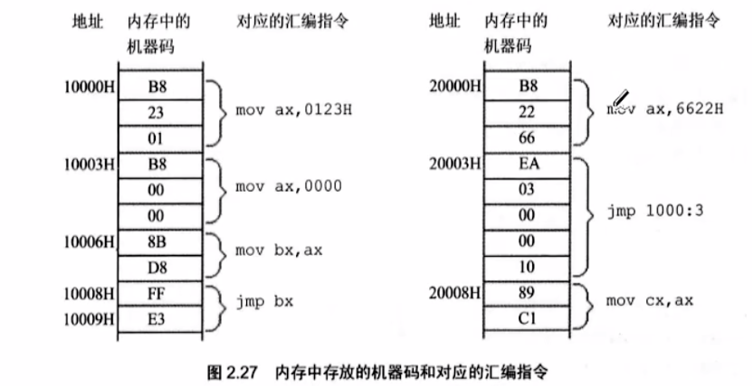
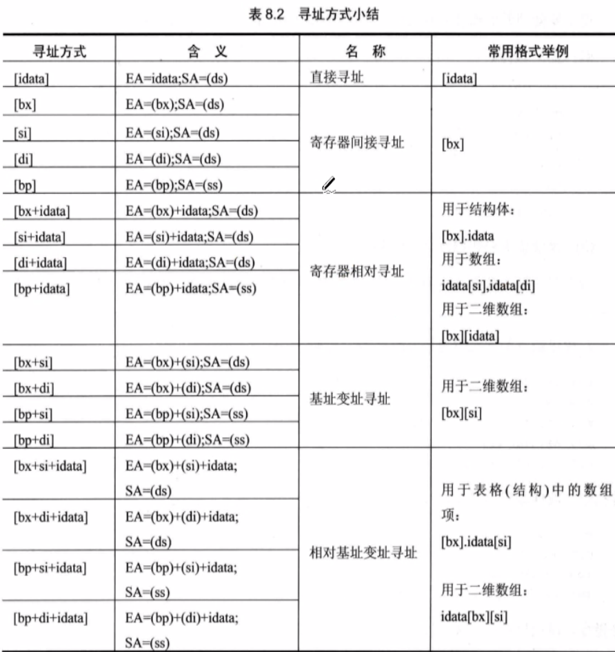

编译环境使用¶
Debug功能¶
- R命令
-r（Register）：查看、改变CPU寄存器的内容 - D命令
-d（Dump）：查看内存中的内容 - E命令
-e（Edit）：改写内存中的内容 - T命令
-t(Trace)：执行一条机器指令 - A命令
-a(Assemble)：以汇编指令的格式在内存中写入一条机器指令 - U命令
-u(Unassemble)：将内存中的机器指令翻译成汇编指令
mov、add、sub指令¶
mov ch,10：将高八位覆盖前两个：CX：0000 --t--> CX：1000 (默认是十六进制显示) 具体的过程如下：CX:0000 0000 0000 0000 --t--> CX:0001 0000 0000 0000
关于寄存器的小总结
ch - cx寄存器的高八位 - c,high
bl - bx寄存器的低八位 - b,low
add bx,ax：等价于bx = bx + ax
特别地，我们会谈及关于寄存器加法溢出的问题，设此时cx = E0DE
add cl,86操作后，对于DE+86 = 194但是溢出的1不会保存到cx的第三位（16进制显示） 所以最后的结果是cx = E094
同理这样对于sub借位的机制等价于这里对于溢出位的处理机制。
寄存器¶
- AH&AL = AX(accumulator)：累加寄存器
- BH&BL = BX（Base）：基址寄存器
- CH&CL = CX（count）：计数寄存器
- DH&DL = DX（data）：数据寄存器
- SP（Stack Pointer）：堆栈指针寄存器
- BP（Base Pointer）：基址指针寄存器
- SI（Source Pointer）：源变址寄存器
- DI（Destination Index）：目的变址寄存器
- IP（Instruction Pointer）：指令指针寄存器
- CS（Code Segment）：代码段寄存器
- DS（Data Segment）：数据段寄存器
- SS（Stack Segment）：堆栈段寄存器
- ES（Extra Segment）：附加段寄存器
下面介绍一些常用的标志位：
- OF（overflow Flag） 溢出标志 操作数超出机器能表合适的范围表示溢出，溢出时为1。
- ZF（zero Flag）零标志，运算结果等于0时为1，否则为0
- SF（sign Flag）符号标志 记录迅速按结果时候的符号，结果为负时为1
- CF（carry Flag）进位标志 最高有效位产生进位时为1，否则为0
- AF（Auxiliary carry Flag）辅助进位标志，运算时候第三位向第四位产生进位为1，否则为0
- PF（parity flag）奇偶标志，匀速拿结果操作数位为1的个数为偶数个时为1，否则为0
- DF（direction flag）方向标志，用于串处理，DF = 1时，每次操作后使SI和DI见效，DF = 0时则增大
- IF（interrupt flag）终端标志，IF = 1时，允许CPU相应可屏蔽中断，否则关闭中断
- TF（trap flag）陷阱标志，用于调试单步操作
mul、div、and、or指令¶
mul：两个相乘的数，要么都是8位，要么都是16位，如果是8位，默认放在AL中，另一个放在8位reg或者内存字节单元中；如果是16位，一个默认放在AX中，另一个放在16位reg或者内存单元中。- 结果，如果是8位乘法默认放在AX中；如果是16位乘法，结果高位默认放在DX中，低位放在AX中放
mov ax,64h //这里显示的是十六进制
mov bx,2710h
mul bx ;这里等价于ax = bx*ax
div：除法指令- （1）除数：有8位和16位两种，有一个在reg或内存单元
- （2）被除数：如果除数位8位，被除数就是16位，默认存放在AX；如果除数为16位，被除数则为32位，在DX和AX中存放，DX存放在高16位，AX存放低16位。
-
（3）结果：如果除数为8位，则AL存储出发操作的商，AH存储除法操作的余数。同理可推出除数为16位的情况
-
and：逻辑与：按位进行与运算 and al,00111011B按位与运算后保存在al中。 同理对于or运算，我们不多解释
shl和shr指令¶
- shl(shift left) 左移指令
- shr(shift right) 右移指令
注意循环左移(rol)和普通左移（shl）、循环右移（ror）和普通右移的区别
dec和inc指令¶
dec ax等价于C++中的ax--inc ax等价于C++中的ax++
NOP和XCHG、NEG指令¶
NOP空指令，相当于占位指令。方便前面的代码交换到空的 地方xchg ax,bx交换元素指令neg ax对ax取负数（先去反码）
常见int中断指令¶
这个中断指令的起源可以从保证div除法指令有意义并且进行正确除法的方法。
int 0：除数不能为0的中断指令int 21：程序正常退出的指令
段地址*16+偏移地址=物理地址的本质含义¶
| 物理地址 | 段地址 | 便宜地址 |
|---|---|---|
| 21F60H | 2000H | 1F60H |
| - | 2100H | 0F60H |
| - | 21F0H | 0060H |
| - | 21F6H | 0000H |
本质含义可以看到下图：

DS和[address] - 内存读取¶
注意:[...]表示的是一个内存单元，然后"[0]"表示内存单元的偏移值为0。
现在我们要访问数据的段地址，比如我们要读取10000H单元的内容，可以使用如下的程序段进行。
mov bx,1000H
mov ds,bx ;不能直接操作mov ds,1000H,不能使用立即数
mov ax,[0]
在本小节中，我们需要学会从物理内存中读取数据的方式，并且注意到Windows小端序的存取的特点。然后学会使用通过DS寄存器来读取内存的数据。最后你需要知道这个物理地址的含义，以及上面小节中的图片的含义。
高八位、低八位与小端序存取的基本原理
我们以CX寄存器的存取为例子，此时CX的状态是：
CX = 0000,并且DS = 2000然后我们在内存中2000:0000 B8 23 01 BB读取数据，执行mov CX,[1]然后得到CX = 01 23
为什么呢？这其实很自然。 01是CX的高位，所以对应着内存地址中的高八位； 23时CX的低位，所以对应着内存地址中的低八位；
CS和IP段寄存器和jmp指令¶
CS是段地址，IP是偏移地址，用来去读取内存中的指令并且执行。其实你实践过后发现其实很简单，代码和数据其实不加以区分存储在内存中。

参考上面的图片，我们能够认知到jmp指令的功能和使用。
在Debug中，我们可以看到，jmp指令的本质是跳转到指定的地址。然后根据CS、IP寄存器的功能，我们能知道:
mov ax,0000
mov bx,ax
;此时CS=1000
jmp bx
;等价于jmp 1000:0000
栈¶
我们在这里介绍清楚CPU的栈的机制。
push [0] ;合法
pop [1] ;合法
push ax ;合法
pop bx ;合法
push 1000h ;不合法，不能是立即数
pop 1000h ;同上
栈的存储机制¶

我们仍然借用之前小端序原理的解释，“0123H”的存储，“01”是高位，所以对应栈中的高地址“1000FH”，然后“23”的是数据段的低位，所以对应了栈中的低地址“1000EH”
在任意时刻，SS:SP指向栈顶的元素

核心步骤： \(SP = SP - 2\) 执行push时候，CPU的两步操作是：先改变SP，然后向SS:SP处传送。
如果是需要从栈中POP出元素

核心步骤就是： \(SP = SP + 2\) 执行pop时候，CPU的两步操作时，先读取SS：SP的数据，后改变SP。
栈的越界问题¶
压栈，弹栈都有可能导致栈顶越界的问题，因为栈的范围是人为确定的（对于8086CPU而言）
[bx+idata]¶
我们发现，我们可以使用[bx]来指明一个内存地址，而其他的寄存器不能有这个功能。
-e 1000:0000 00.12 00.34 00.56 00.78 00.AB
mov bx,1002
mov cx,[bx+1]
- d 1000:1002
[SI],[DI]¶
记住，一般来说，[]的功能就是偏移地址
同样的SI、DI是8086CPU中和bx功能相近的寄存器。用来寻找地址。
下面的三段代码实现了相同的功能：
mov bx,0
mov ax,[bx]
mov si,0
mov ax,[si]
mov di,0
mov ax,[di]
于是，我们通过 [bx+si],[bx+di],[bx+si+idata],[bx+di+idata] 实现更加灵活的寻址方式，可以用于循环寻找地址等方式。
易错点
mov cx,[bx+si+di+1]是错误的，si和di寄存器不能同时使用。mov [bx+si+1],cx是正确的，[bx+si+1]的本质是一个内存单元，当然可以这样执行，之前我们执行过mov [1],cx是可以的，在这里也是类似的。
[bp]¶
只要在[...]中使用寄存器bp，如果指令中没有显性给出段地址，段地址就默认在ss中，比如在下面的指令：
mov ax,[bp] ;等价于(ax) = ((ss)*16+(bp))
寻址的方式小结¶

标志寄存器¶
一般来说，运算或者逻辑操作才会改变标志位，数据传送不改变标志位。
ZF标志（zero Flag）¶
mov ax,2
sub ax,1 ;结果为0，ZF=1，表示“结果为0”
add ax,1 ;结果为1，ZF=0，表示“结果非0”
注意，关于数据传送类指令mov,push,pop的结果不算在ZF的检测中。
PF标志¶
flag的第二位是PF，名称为奇偶标志位。它记录相关指令执行之后的，其结果总所有的Bit为中1的个数是不是偶数。如果1的个数为偶数，pf = 1，如果为奇数，那么为0.
同样的，PF标志位的检测对数据传送类指令mov,push,pop的结果无效。
SF标志（sign Flag）¶
在计算机的存储中，一个数字可能是原码存储在计算器中，也可能是补码存储在计算器中。
例如，10000001B，可以看作是无符号整数129，也可以看作是有符号整数-127。
CF标志（carry Flag）¶
CF会记录向高位的借位值或者进位值。
mov al,98H
add al,al ;执行后：（al）= 30H，CF=1，CF记录了向更高位的进位值
mov al,97H
sub al,98H ;执行后：（al）=FFH，CF=1，CF记录了向更高位的借位值。
sub al,al ;执行后：（al）= 0，CF = 0，CF记录了向更高位的借位值。
OF标志（over Flag）¶
有符号运算的结果超过了机器所能表示的范围称之为溢出。8位有符号整数的表示范围：-128~127。
OF和CF的一些区别漫谈
CF针对无符号数(将寄存器中的操作数都看作是无符号数) OF针对有符号数(将寄存器中的操作数都看作是有符号数)
98的十六进制 --62，同理98
MOV al,62
MOV bl,63
add al,bl
具体可以参考这篇文章理解清楚：标志位寄存器与CF、OF标志位的区分 - CSDN
其他的Flag寄存器不常用，我们就不一一介绍啦。详情可以参考笔记开头的记录。需要用到的时候了解下即可
adc指令¶
adc是带进位的加法指令，他利用CF位上记录的进位值
指令格式：adc 操作对象1，操作对象2 功能：操作对象1 = 操作对象1 + 操作对象2 + CF
mov ax,1
mov bx,2
sub ax,bx
adc ax,1
同时我们给出一个示例程序，显示出这个进位的功能：
mov ax,198
mov bx,183
add al,bl
add ah,bh ;结果是021B，错误，没有传递这个中间进位
add al,bl
adc ah,bh ;结果是031B，正确！
例题：试一试，我们计算1EF0001000H+2010001EF0H，结果保存在ax(最高16位)，bx（次高十六位），cx（低16位）中
sbb指令¶
sbb类似上面的adc，带借位减法指令，它利用了CF上记录的借位值。基本上思想与上面相同，我们不再次赘述。
cmp指令¶
cmp是比较指令，cmp的指令的功能相当于减法指令，只是不保存结果。cmp指令执行之后将会对标志寄存器产生影响。
cmp ax,bx ;等价于观察(ax)-(bx)
如果你标志位学习的比较好，那么下面的的结果将会看起来很自然：
| cmp ax,bx | 标志位的变化 |
|---|---|
| ax = bx | zf = 1 |
| ax != bx | zf = 0 |
| ax < bx | cf = 1 |
| ax >= bx | cf = 0 |
| ax > bx | cf = 0并且zf = 0 |
| ax <= bx | cf = 1 或者 zf = 1 |
那么我们继续给出对无符号数的比较结果进行转移的条件跳转指令：
| 指令 | 英文对应 | 含义 | 标志位 |
|---|---|---|---|
| je | jump if equal | 等于跳转 | zf = 1 |
| jne | jump if not equal | 不等于跳转 | zf = 0 |
| jb | jump if below | 小于跳转 | cf = 1 |
| jnb | jump if not below | 大于等于跳转 | cf = 0 |
| ja | jump if above | 大于跳转 | cf = 0并且zf = 0 |
| jna | jump if not above | 小于等于跳转 | cf = 1或者zf = 0 |